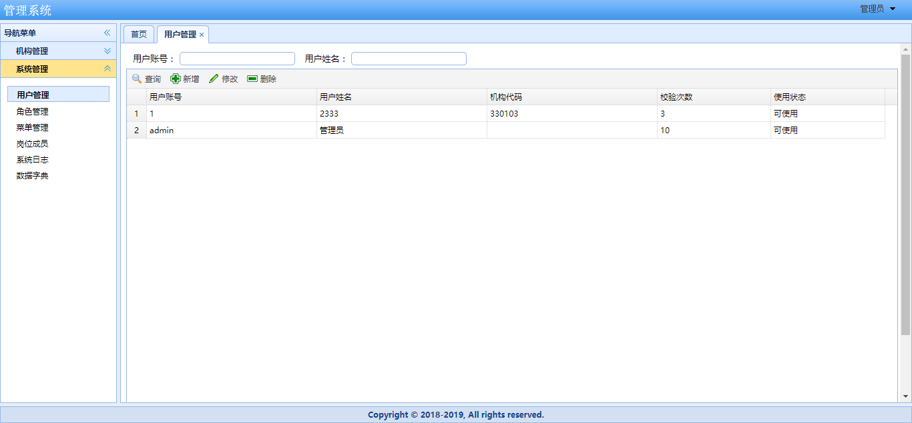

原文出处:本文由博客园博主彩虹来了提供。
原文连接:https://www.cnblogs.com/walkwithmonth/p/11667901.html
原文连接:https://www.cnblogs.com/walkwithmonth/p/11667901.html
后台开发人员不擅长前端UI界面，而小型软件公司没有专职美工岗位，开发人员只能借助开源UI框架，复用已有组件，完成用户操作界面。EasyUI是基于jQuery的UI插件集合体，可帮助开发者轻松构建网页。
一、引用EasyUI
官网下载EasyUI组件jquery-easyui-1.*.*.zip，项目工程导入locale文件夹、themes文件夹、jquery.easyui.min.js、jquery.min.js文件。
二、以系统用户首页为例，使用EasyUI
1) 用户登录系统，首页界面

2）home.jsp编码设计
<%@ page language="java" import="java.util.*" pageEncoding="UTF-8"%>
<!DOCTYPE html PUBLIC "-//W3C//DTD XHTML 1.0 Transitional//EN" "http://www.w3.org/TR/xhtml1/DTD/xhtml1-transitional.dtd">
<html xmlns="http://www.w3.org/1999/xhtml">
<head >
<meta http-equiv="Content-Type" content="text/html; charset=utf-8" />
<title>管理系统</title>
<link rel="stylesheet" href="plugin/easyui/themes/icon.css" />
<link rel="stylesheet" href="plugin/easyui/themes/default/easyui.css" />
<link rel="stylesheet" href="css/home.css"/>
<script type="text/javascript" src="plugin/easyui/jquery.min.js"></script>
<script type="text/javascript" src="plugin/easyui/jquery.easyui.min.js"></script>
<script type="text/javascript" src="plugin/easyui/locale/easyui-lang-zh_CN.js"></script>
<script type="text/javascript" src="js/pathurl.js"></script>
<script type="text/javascript" src="js/home.js?v=1.01"></script>
<script type="text/javascript" src="js/head.js"></script>
</head>
<!-- ${userName} -->
<body class="easyui-layout" style="overflow-y: hidden" scroll="no">
<input id="logUser" type="hidden" value="${userName}"/>
<input id="userNotice" type="hidden" value="${userNotice}"/>
<div region="north" split="true" border="false" style="overflow: hidden; height: 35px;
background: url(images/header.jpg) #7f99be repeat-x center 50%;
line-height: 30px;color: #fff; font-family: Verdana, 宋体">
<span style="padding-left:5px; font-size: 18px; ">管理系统</span>
<span style="float:right; padding-right:20px; font-size: 18px;" class="head">
<a href="javascript:void(0)" id="menub" class="easyui-menubutton"
data-options="menu:'#userfunc',iconCls:'icon-userMgr'">${userName}</a>
</span>
</div>
<div region="south" split="true" style="height: 30px; background: #D2E0F2; ">
<div class="footer">Copyright © 2010-2017 Start, All rights reserved.</div>
</div>
<div region="west" hide="true" split="true" title="导航菜单" style="width:180px;" id="west">
<div id="menunav" class="easyui-accordion" fit="true" border="false">
<!-- 导航内容 -->
</div>
</div>
<div id="mainPanle" region="center" style="background: #eee; overflow-y:hidden">
<div id="tabs" class="easyui-tabs" fit="true" border="false" >
<div title="首页" style="padding:20px;overflow:hidden; color:blue; " >
<h1 style="font-size:20px;" align="center">欢迎使用管理系统</h1>
</div>
</div>
</div>
<!--修改密码窗口-->
<div id="w" class="easyui-window" title="修改密码" collapsible="false" minimizable="false"
maximizable="false" icon="icon-save" style="width: 300px; height: 150px; padding: 5px;
background: #fafafa;">
<div class="easyui-layout" fit="true">
<div region="center" border="false" style="padding: 10px; background: #fff; border: 1px solid #ccc;">
<table cellpadding=3>
<tr>
<td>旧密码：</td>
<td><input id="txtOldPass" type="password" class="easyui-textbox" /></td>
</tr>
<tr>
<td>新密码：</td>
<td><input id="txtNewPass" type="password" class="easyui-textbox" /></td>
</tr>
<tr>
<td>确认密码：</td>
<td><input id="txtRePass" type="password" class="easyui-textbox" /></td>
</tr>
</table>
</div>
<div region="south" border="false" style="text-align: right; height: 30px; line-height: 30px;"> <a id="btnEp" class="easyui-linkbutton" icon="icon-ok" href="javascript:void(0)" > 确定</a> <a id="btnCancel" class="easyui-linkbutton" icon="icon-cancel" href="javascript:void(0)">取消</a> </div>
</div>
</div>
<div id="mm" class="easyui-menu" style="width:150px;">
<div id="mm-tabupdate">刷新</div>
<div class="menu-sep"></div>
<div id="mm-tabclose">关闭</div>
<div id="mm-tabcloseall">全部关闭</div>
<div id="mm-tabcloseother">除此之外全部关闭</div>
<div class="menu-sep"></div>
<div id="mm-tabcloseright">当前页右侧全部关闭</div>
<div id="mm-tabcloseleft">当前页左侧全部关闭</div>
<div class="menu-sep"></div>
<div id="mm-exit">退出</div>
</div>
<div id="userfunc" style="width:150px;">
<div id="editpass" data-options="iconCls:'icon-edit'">修改密码</div>
<div id="loginOut" data-options="iconCls:'icon-stop'">注销</div>
</div>
</body>
</html>
3）根据easyUI组件，编写功能菜单UI
$(function() {
InitLeftMenu();
tabClose();
tabCloseEven();
});
// 初始化左侧菜单
function InitLeftMenu() {
$("#menunav").accordion({
animate : false
});
$.ajax({
url : "user/getusermenu.do",
type : "POST",
dataType : "json",
success : function(data) {
console.log("菜单数据: " + JSON.stringify(data));
$.each(data.menus, function(i, n) {
var menulist = '';
menulist += '<ul>';
$.each(n.menus, function(j, o) {
menulist += '<li><div><a ref="'
+ o.menuId
+ '" href="#" rel="'
+ o.menuUrl
+ '" ><span class="icon '
+ o.icon
+ '" > </span><span class="nav">'
+ o.menuName
+ '</span></a></div></li> ';
})
menulist += '</ul>';
$('#menunav').accordion('add', {
title : n.menuName,
content : menulist,
iconCls : 'icon ' + n.icon
});
});
$('.easyui-accordion li a').click(function() {
var tabTitle = $(this).children('.nav').text();
var url = $(this).attr("rel");
var menuid = $(this).attr("ref");
addTab(tabTitle, url);
$('.easyui-accordion li div').removeClass("selected");
$(this).parent().addClass("selected");
}).hover(function() {
$(this).parent().addClass("hover");
}, function() {
$(this).parent().removeClass("hover");
});
// 选中第一个
var panels = $('#menunav').accordion('panels');
var t = panels[0].panel('options').title;
$('#menunav').accordion('select', t);
}
});
}
// 添加选项卡
function addTab(subtitle, url) {
if (!$('#tabs').tabs('exists', subtitle)) {
$('#tabs').tabs('add', {
title : subtitle,
content : createFrame(url),
closable : true
// icon:icon
});
} else {
$('#tabs').tabs('select', subtitle);
$('#mm-tabupdate').click();
}
tabClose();
}
// 创建点击菜单时打开框架
function createFrame(url) {
var s = '<iframe scrolling="auto" frameborder="0" src="' + url
+ '" style="width:100%;height:100%;"></iframe>';
return s;
}
// 关闭选项卡
function tabClose() {
/* 双击关闭TAB选项卡 */
$(".tabs-inner").dblclick(function() {
var subtitle = $(this).children(".tabs-closable").text();
$('#tabs').tabs('close', subtitle);
})
/* 为选项卡绑定右键 */
$(".tabs-inner").bind('contextmenu', function(e) {
$('#mm').menu('show', {
left : e.pageX,
top : e.pageY
});
var subtitle = $(this).children(".tabs-closable").text();
$('#mm').data("currtab", subtitle);
$('#tabs').tabs('select', subtitle);
return false;
});
}
// 绑定右键菜单事件
function tabCloseEven() {
// 刷新
$('#mm-tabupdate').click(function() {
var currTab = $('#tabs').tabs('getSelected');
var url = $(currTab.panel('options').content).attr('src');
$('#tabs').tabs('update', {
tab : currTab,
options : {
content : createFrame(url)
}
})
})
// 关闭当前
$('#mm-tabclose').click(function() {
var currtab_title = $('#mm').data("currtab");
$('#tabs').tabs('close', currtab_title);
})
// 全部关闭
$('#mm-tabcloseall').click(function() {
$('.tabs-inner span').each(function(i, n) {
var t = $(n).text();
$('#tabs').tabs('close', t);
});
});
// 关闭除当前之外的TAB
$('#mm-tabcloseother').click(function() {
$('#mm-tabcloseright').click();
$('#mm-tabcloseleft').click();
});
// 关闭当前右侧的TAB
$('#mm-tabcloseright').click(function() {
var nextall = $('.tabs-selected').nextAll();
if (nextall.length == 0) {
$.messager.alert('系统提示', '已关闭', 'error');
return false;
}
nextall.each(function(i, n) {
var t = $('a:eq(0) span', $(n)).text();
$('#tabs').tabs('close', t);
});
return false;
});
// 关闭当前左侧的TAB
$('#mm-tabcloseleft').click(function() {
var prevall = $('.tabs-selected').prevAll();
if (prevall.length == 0) {
return false;
}
prevall.each(function(i, n) {
var t = $('a:eq(0) span', $(n)).text();
$('#tabs').tabs('close', t);
});
return false;
});
// 退出
$("#mm-exit").click(function() {
$('#mm').menu('hide');
})
}
4）菜单Json对象数据格式


{"menus":[{"icon":null,"menuId":"A","menuName":"机构管理","menus":[{"menuId":"A1","menuName":"部门机构","parentId":"A","menuUrl":"dept/index.do","serialNo":null,"icon":null}]},{"icon":"icon-overview","menuId":"H","menuName":"系统管理","menus":[{"menuId":"H1","menuName":"用户管理","parentId":"H","menuUrl":"system/user/index.do","serialNo":null,"icon":"icon-overview"},{"menuId":"H2","menuName":"角色管理","parentId":"H","menuUrl":"system/role/index.do","serialNo":null,"icon":"icon-overview"},{"menuId":"H3","menuName":"菜单管理","parentId":"H","menuUrl":"system/menu/index.do","serialNo":null,"icon":"icon-overview"},{"menuId":"H4","menuName":"岗位成员","parentId":"H","menuUrl":"system/rolemember/index.do","serialNo":null,"icon":null},{"menuId":"H5","menuName":"系统日志","parentId":"H","menuUrl":"system/log/index.do","serialNo":null,"icon":"icon-overview"},{"menuId":"H6","menuName":"数据字典","parentId":"H","menuUrl":"system/param/index.do","serialNo":null,"icon":"icon-overview"}]}]}三、API手册
1) 官网组件（英文）地址：http://www.jeasyui.com/documentation/index.php#
2) jQuery EasyUI 官方API文档中文版,下载地址：http://download.csdn.net/album/detail/343